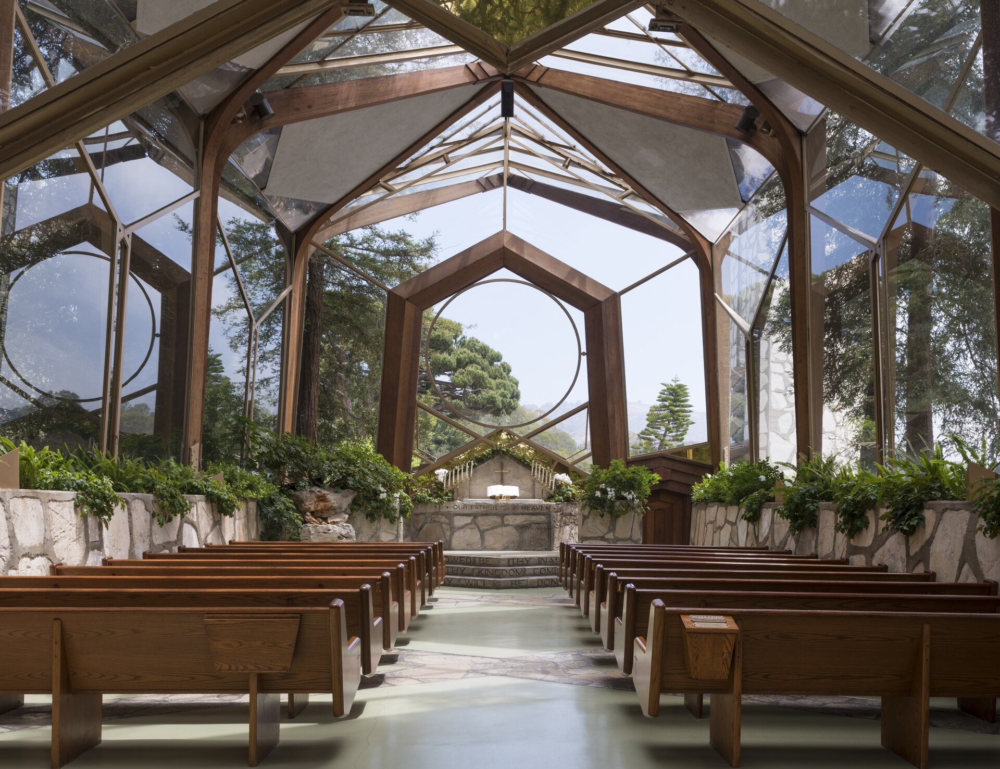

미래를 읽고, 오늘 섬기는 목회.
미래예측과 AI자비스비서로 세우는, 근거 있는 목회.

사진: Carol M. Highsmith · 퍼블릭 도메인미래를 읽는 교회.
2050 한국교회 전망 위에서
오늘의 목회를 다시 세웁니다.
연구소가 읽는 것
아홉 가지 신호, 모두 확인.
AI자비스비서 · 일하는 중
- 교회 자료 읽는 중
- 초안 작성 중
- 목회자 확인 기다리는 중
목회자 1,000여 명이 함께했습니다.2026년 세미나·특강·컨퍼런스
사진: Breather · CC0
2026 목회계획 세미나다섯 곳 순회,
대만까지.300여 명의 목회자가 함께 한 해를 짰습니다
대만까지.300여 명의 목회자가 함께 한 해를 짰습니다
목회의 내일을 읽습니다.
지금부터.
다섯 가지 사역으로 목회자와 선교사, 성도를 섬깁니다. 미래를 읽는 연구부터 내 교회에 맞춘 AI 비서, 한 해를 짜는 워크숍까지.
01 / 05
담임목사 521명 · 설교 준비에 AI 사용
55 %담임목사 전체
목회자의 AI 사용
세대마다 다른 속도.
출처: 목회데이터연구소 넘버즈 337호(2026-02)
사진: Ben White · CC0
자비스에게 맡긴 일
"주일 주보 초안과 심방 기록을 정리해 줘"
- 지난주 주보 형식 읽기
- 심방 메모 12건 정리
- 목사님 확인 요청
비서 모드
일손은 비서에게, 결정은 목회자에게.
자비스가 돕는 일 12가지
이미 하던 일 그대로.
R.Start예측 기록부9가지 신호갈림길판단 질문자료실
2027 한국교회 예측 시나리오 1월호 · 예시 화면
적은 예측—
판정 전—
적중—
유보—
| 예측 | 대상 | 기한 | 판정 조건 | 판정 |
|---|---|---|---|---|
| [예측 문장] | [대상] | [기한] | [판정 조건] | 판정 전 |
| [예측 문장] | [대상] | [기한] | [판정 조건] | 적중 |
| [예측 문장] | [대상] | [기한] | [판정 조건] | 실패 |
| [예측 문장] | [대상] | [기한] | [판정 조건] | 유보 |
칸 구성 예시 — 첫 예측은 1월호와 함께 공개
예측 기록부모든 예측을,
모든 예측을,
한 장의 기록부로.
미래교회연구소하나의 표, 하나의 사명.
하나의 표, 하나의 사명.
미래를 읽고 오늘 섬깁니다.
미래예측과 AI자비스비서를 도구로 삼아 한국교회와 이민교회, 선교지의 목회자와 성도를 섬기는 연구·교육 사역 기관입니다. 국내 10개 지역과 해외 10개국으로 섬김을 넓힙니다.
강사 보기세미나와 책.
지금 신청하세요.
근거 있는 글만 씁니다.
집필 원칙을 공개합니다.
관측된 사실, 저자의 해석, 조건부 전망을 문장마다 나눠 표시합니다. 숫자에는 출처와 기준 시점을 함께 적습니다.
집필 규칙
● ◆ ▲
사실 · 해석 · 전망을 섞지 않습니다
사진: Aaron Burden · CC0
『2027 한국교회 예측 시나리오』 집필 규칙
"조사 대상이나 문항이 다른 자료는 하나의 추세로 잇지 않는다."
세부 목차 · 집필 규칙 ①
다섯 강사가
다섯 사역을 이끕니다.
공개 기사로 확인한 내용을 바탕으로 쓴 가안입니다. 사진과 소개글은 강사 본인 확인 뒤 바꿉니다.
소식 받기다시 일어서는 교회를
다시 일어서는 교회를
미리 준비하세요.
세미나 일정, 새 예측 시나리오, 연구 노트를 메일로 보내 드립니다.
시안 화면입니다. 실제로 접수되지는 않습니다.